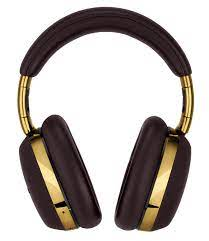

Test Image - 
Output on Microsoft Azure -
accessory
Output on Mobilenet Model -
Microphone
Result -Mibilenet is more accurate
Test Image -
Output on Microsoft Azure -
computer mouse
Output on Mobilenet Model -
Joystick
Result - Microsoft azure is more accurate
Test Image -
Output on Microsoft Azure -
Binoculars
Output on Mobilenet Model -
Lens
Result -Microsoft Azure is more accurate